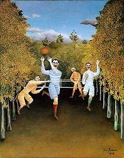
Rousseau: Hráči ragby
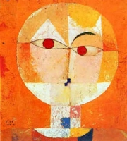
Klee: Hlava muže
|
FANTAZIE A DOBRODRUŽSTVÍ
Většina spisovatelů se věnovala realistické tvorbě, další své knihy ozvláštnili fantastickými motivy, jiní ale zcela popustili uzdu své fantazii. Tyto knihy byly určeny jak dětskému publiku nebo mládeži, tak i dospělým čtenářům. Na začátku 20. století se zrodil nový žánr – fantasy. Stále větší oblibu si získává literatura sci-fi. Velké množství čtenářů mají také knihy dobrodružné, detektivky, horory nebo pohádky. Novým fenoménem se stává komiks.
Ve výtvarné tvorbě se fantazie malířů uplatnila nejvíce v naivním umění.
Naivní umělci většinou neprošli žádnou výtvarnou školou a jejich tvorba vůbec neodpovídala akademickým požadavkům, realistické popisnosti nebo avantgardnímu hledačství nových výrazových forem. Největší slávu si vydobyl francouzský celník Henri Rousseau, pro jehož obrazy je typické dětské vidění světa. Blízko k naivnímu umění měl také Rakušan Paul Klee nebo Rus Marc Chagall.
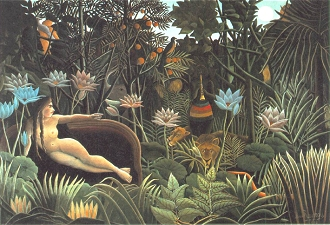
Rousseau: Sen
|
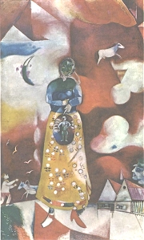
Chagall: Mateřství
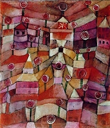
Klee: Růžová zahrada
|
Antoine de Saint-Exupéry (1900-1944)
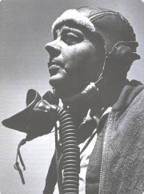
Francouz Antoine de Saint-Exupéry [antoan de sentegziperi] miloval létání a procestoval celý svět. Ve svých knihách Kurýr na jih, Noční let, Země lidí, Válečný letec nebo Malý princ zúročil vlastní zkušenosti pilota a ředitele letiště. Filozofický román Citadela už nedokončil. Jeho letadlo se během průzkumného letu zřejmě zřítilo do moře, nebo bylo sestřeleno nedaleko Korsiky. Od té doby je považován za nezvěstného.
|
Antoine de Saint-Exupéry: Malý princ
Alegorie Malý princ v sobě obsahuje rysy pohádkové i filozofické. Vypravěčem je pilot, kterému se porouchal motor letadla, a proto musel nouzově přistát na Sahaře. Zde se setkává s malým princem, který na Zem přišel z daleké planetky, kde pečoval o mluvící růži. Malý princ vypráví pilotovi o různých planetách – jednu zarostly baobaby, další obýval autoritativní král, jiné domýšlivec, pijan, businessman, lampář a zeměpisec. Na zemi se setkává s výhybkářem a obchodníkem, ochočí si lišku, hledá s pilotem studnu a nakonec se nechá uštknout hadem, aby se mohl vrátit na svou planetu.
Hlavní poselství knihy vyjadřuje často připomínaný citát: „Tady je to mé tajemství, úplně prostinké: správně vidíme jen srdcem. Co je důležité, je očím neviditelné.“ Malý princ ztělesňuje v nejčistší podobě nejdůležitější lidské hodnoty – přátelství a lásku.
|
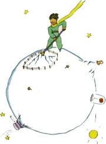
Autorova ilustrace k Malému princi
Jaké je poselství kapitoly o beránkovi?
Co nevidíme očima, ale srdcem?
Přečti si celou knihu a charakterizuj jednotlivé postavy.
Dala by se zdramatizovat?
Je Malý princ knihou pro děti nebo dospělé? Proč si to myslíš?
Co je v životě nejdůležitější?
Co by měl člověk mít a jaký by měl být?
|
A. A. Milne (1882-1956)
Angličan Alan Alexander Milne [miln] začal psát pro svého syna Christophera Robina dětské říkanky a pohádky. Jeho příběhy o zvířátkách vyšly v knize Medvídek Pú.
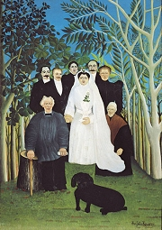
Rousseau: Venkovská svatba
|
A. A. Milne: Medvídek Pú
Veselá kniha Medvídek Pú vypráví o příhodách medvěda a jeho přátel Kryštůfka Robina, prasátka, oslíka, klokana, tygra nebo sovy, kteří žijí v jednom lese.
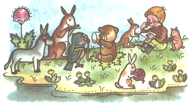
Ilustrace Jaromíra Zápala
|
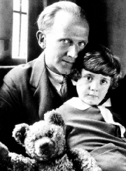
Charakterizuj jednotlivé postavy.
Kterou z nich bys chtěl/a být? Proč?
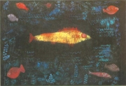
Klee: Zlatá rybka
|
J. R. R. Tolkien (1892-1973)
Anglický lingvista a literární historik John Ronald Reuel Tolkien [tolkín] působil jako profesor v Oxfordu. Do moderní angličtiny přeložil středověké knihy Pan Gawain a Zelený rytíř, Perla nebo Sir Orfeo. Proslul jako zakladatel žánru fantasy. Je autorem fantastických knih Hobit aneb Cesta tam a zase zpátky, Pán prstenů, Silmarillion nebo Farmář Giles z Hamu.
Co víš o staroislandské Eddě?
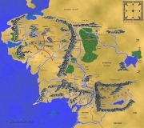
Mapa Středozemě
|
J. R. R. Tolkien: Hobit aneb Cesta tam a zase zpátky
Hlavní postavou fantazie Hobit aneb Cesta tam a zase zpátky je půlčík Bilbo Pytlík. Zprvu pohodlný hobit se vydává spolu s trpaslíky na dobrodružnou cestu za pokladem, který jim kdysi ukradl drak Šmak. Výprava je zajata zlobry a skřety, ale vždy je zachrání dobrý čaroděj Gandalf. Hobit získá od Gluma kouzelný prsten, který ho může učinit neviditelným. Nakonec se podaří draka zabít, ale poklad chtějí jak trpaslíci, tak lidé i elfové. Při střetu s Vrrky a skřety jim pomohou orlové, Bilbo se zřekne většiny svého podílu a vrací se k pokojnému životu v Hobitíně.
Volným pokračováním této knihy je trilogie Pán prstenů. Tolkienovy knihy vycházejí ze starogermánských mýtů, především z Eddy, ale na rozdíl od nich jsou plné humoru. Autor vidí hlavní příčinu zla v touze po majetku. Vědeckou preciznost v sobě Tolkien nezapřel při sestavování map neexistující Středozemě, vymýšlení mytologie jejích obyvatel nebo tamějších jazyků a rodokmenů hrdinů.
|
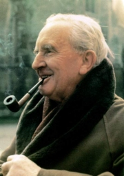
Charakterizuj postavu Gluma.
Jaký je hobit Bilbo Pytlík?
Polož spolužákům nějakou hádanku.
Dokážeš vymyslet vlastní hádanku?
Jaké nadpřirozené bytosti v knize vystupují? Popiš je.
Nakresli ke knize ilustraci.
Kterou postavou z Tolkienových knih bys chtěl/a být? Proč?
O čem pojednává trilogie Pán prstenů?
|
Richard Halliburton
(1900-1939)
Americký dobrodruh Richard Halliburton [ričrd helibértn] cestoval po různých částech světa, kde se snažil zopakovat a na vlastní kůži prožít heroické výkony dávných osobností. Pouštěl se do nebezpečných projektů, o kterých referoval ve svých reportážích shrnutých do knih Královskou cestou za romantikou, Nádherné dobrodružství, Za novými světy, Sedmimílové boty a Létající koberec. Zmizel v Tichém oceánu, když se ho snažil přeplout na čínské bárce.
|
Dobrodružství Richarda Halliburtona
Richard Halliburton přeplaval Hellespont jako Byron, překonal na slonu Alpy jako Hannibal, uběhl trasu z Marathonu do Athén jako Feidippides nebo putoval po Středozemním moři ve stopách Odyssea. Proplaval zdymadly Panamského průplavu, zlezl Popokatepetl, Fudži, Matterhorn, Kilimandžáro a další velehory, v letadle nazvaném Kouzelný koberec ztroskotal na Sahaře... Kompletní výčet jeho dobrodružství a sportovních výkonů by byl ovšem mnohem delší. Skočil také do indiánské Studny smrti, aby zjistil, jaké pocity měly lidské oběti.
Halliburton plave Panamským průplavem.
|
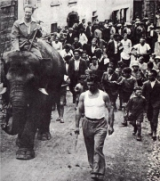
Halliburton zdolává na slonu Alpy.
Co si myslíš o Halliburtonovi?
Jaké dobrodružství bys chtěl/a zažít?
Co si myslíš o adrenalinových sportech?
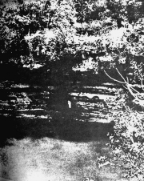
Halliburton skáče do mayské Studny smrti.
|
Aldous Huxley (1894-1963)
Angličan Aldous Huxley [óldes haksli] je předním autorem žánru sci-fi, který obohatil o filozofické pasáže. Napsal romány Kontrapunkt, Konec civilizace nebo Raněný slepotou.
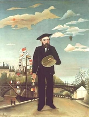
Rousseau: Autoportrét
|
Aldous Huxley: Konec civilizace
V antiutopii Konec civilizace (Brave New World) podává Huxley chmurný obraz budoucnosti jako globální totalitní společnosti. Svět ovládá konzum a povrchní zábava. Vše bylo zmechanizováno a podřízeno trhu. Rodina neexistuje. Slovo „matka“ je nadávkou. Lidé se oddávají nezávaznému sexu. Únik ze skutečnosti zajišťuje droga sóma. Děti se rodí ve státních inkubátorech a je předem dáno, k jaké kastě budou patřit, jakou práci budou zastávat a jak budou vnímat okolní svět. Do konfliktu s konzumní společností se dostane Divoch, který vyrůstal stranou civilizace v indiánské rezervaci. Ostatní lidé v něm vidí buď atrakci, nebo nebezpečného podivína.
Satirické prvky se projevují ve jménech některých postav – dívka Lenina a její přítel Marx. Ježíše Krista zase nahradil zbožštělý Ford...
|
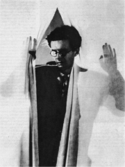
Cecil Beaton: Huxley
Srovnej současnou společnost s Huxleyovou vizí.
Co je predestinace, dekantace a hypnopedie?
Jaký je rozdíl mezi alfami a epsilony?
Chtěl/a by ses dožít „konce civilizace“? Proč?
|
Agatha Christie (1890-1976)
Anglická spisovatelka Agatha Christie [egesa kristí] proslula jako autorka detektivních příběhů. S druhým manželem (archeologem) podnikla několik výprav do Iráku a Sýrie. Kromě 70 detektivních románů, např. Vražda v Orient expresu, Vražda v Mezopotámii, Vraždy podle abecedy, Smrt na Nilu, Vražda milionáře Ackroyda, Vražda na faře nebo Deset malých černoušků, napsala Vlastní životopis, drama Past na myši nebo cestopis Pověz mi, jak žijete. Agatha Christie vytvořila postavu belgického policisty Hercula Poirota, který se spoléhá na svůj rozum a dokáže logicky vysvětlit i ty největší záhady a objasnit nejpodivnější zločiny. Pachatel je většinou odhalen v efektní závěrečné scéně, které se účastní všichni podezřelí.
|
Agatha Christie: Deset malých černoušků
Próza Deset malých černoušků není klasickou detektivkou, protože v ní chybí postava detektiva. Kdosi pozve prostřednictvím dopisů na Černochův ostrov deset lidí, kteří zdánlivě nemají nic společného. Z gramofonové desky se o sobě dozvídají, že každý z nich někoho zavraždil, aniž byl za svůj zločin potrestán. Za podivných okolností (podle textu dětské říkanky o deseti malých černoušcích) jeden za druhým umírá. Kvůli bouřce zůstane ostrov deset dní odříznutý od okolního světa, a když na něj dorazí policisté, najdou pouze deset mrtvol. Kdo byl záhadným mstitelem, se dozvídáme až z náhodně nalezeného přiznání.
Další díla
Edgar Rice Burroughs: Tarzan
Pierre Souvestre: Fantomas
Erwin Robert Howard: Barbar Conan
|
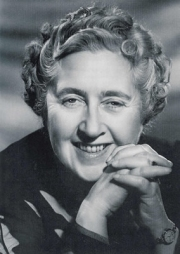
Kdo v knize nahrazuje postavu detektiva?
Odhadni z ukázek, kdo by mohl být tajemným mstitelem, který vzal spravedlnost do vlastních rukou.
Bylo zavražděno více lidí v detektivkách nebo ve skutečnosti?
Zemřelo více lidí v knihách nebo ve skutečnosti?
Čteš detektivní příběhy? Proč?
Proč se v televizi vysílá tolik detektivek?
Zkus napsat detektivní povídku.
|
Internetové stránky
Rousseau, malíř
Chagall, malíř
Klee, malíř
Klee, malíř
Saint-Exupéry: Malý princ
Saint-Exupéry
Žák: Antoine de Saint-Exupéry, článek
Tikovský: Co odhalil vrak Saint-Exupéryho letadla?, článek
Milne: Medvídek Pú
Milne a Pú
Milne a Pú
Milne a Pú
Halliburton
Halliburton
Diestler: Pán prstenů, článek
Fantys: Středozemě, článek
Tolkien
Tolkien
Tolkien
Tolkien
Tolkien
Tolkien, rozcestník
Huxley
Huxley
Christie
Christie
Kašpar: R.E.Howard, článek
Nick Carter, postava detektivek
|
Doporučená četba
Carpenter, Humphrey: J. R. R. Tolkien, Životopis, přel. S.Pošustová, Mladá fronta, Praha 1992
Carter, Lin: Tolkien, Zákulisí Pána prstenů, přel. S.Pošustová, Argo, Praha 2002
Clair, R., Tichý, J.: Comics, SNDK, Praha 1967
Fantasy, Encyklopedie fantastických světů, Albatros, Praha 2003
Halliburton, Richard: Nádherné dobrodružství, přel. J.Pober, Orbis, Praha 1971
Halliburton, R.: Za novými světy, přel. Poberovi, Orbis, Praha 1970
Hoff, Benjamin: Pú a Tao, přel. L.Cronin-Kliková, Volvox Globator, Praha 1996
Huxley, Aldous: Konec civilizace, přel. J.Kostohryz, Maťa, Praha 1998
Chevrier, Pierre: Saint-Exupéry, Vyšehrad, Praha 1986
Christieová, Agatha: Deset malých černoušků, přel. J.Z.Novák, Odeon, Praha 1988
Klee, Paul: Čáry, přel. I.Wernisch, Odeon, Praha 1990
Milne, A. A.: Medvídek Pú, přel. H.Skoumalová, Albatros, Praha 1972
Saint-Exupéry, Antoine de: Citadela, přel. V.Dvořáková, Vyšehrad, Praha 2004
Saint-Exupéry, Antoine de: Malý princ, přel. Z.Stavinohová, Albatros, Praha 1972
Saint-Exupéry, Simone de: Vzpomínky na Malého prince, přel. I.Staňková, Mladé letá, Bratislava 2003
Tolkien, J. R. R.: Hobit aneb Cesta tam a zase zpátky, přel. F.Vrba, Odeon, Praha 1991
Tolkien, J. R. R.: Pán prstenů (3 svazky), přel. S.Pošustová, Mladá fronta, Praha 1990
Tolkien, J. R. R.: Silmarillion, přel. S.Pošustová, Mladá fronta, Praha 1992
|
Vypracuj písemný referát o některé z uvedených knih.
Exkurze
Expozice naivního umění, Diecézní muzeum a galerie, Litoměřice
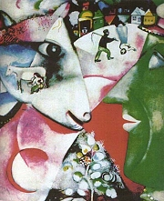
Chagall: Já a vesnice
Tipy
Zoul: Století komiksu
Zrození komiksu z ducha novin, seriál
|
|